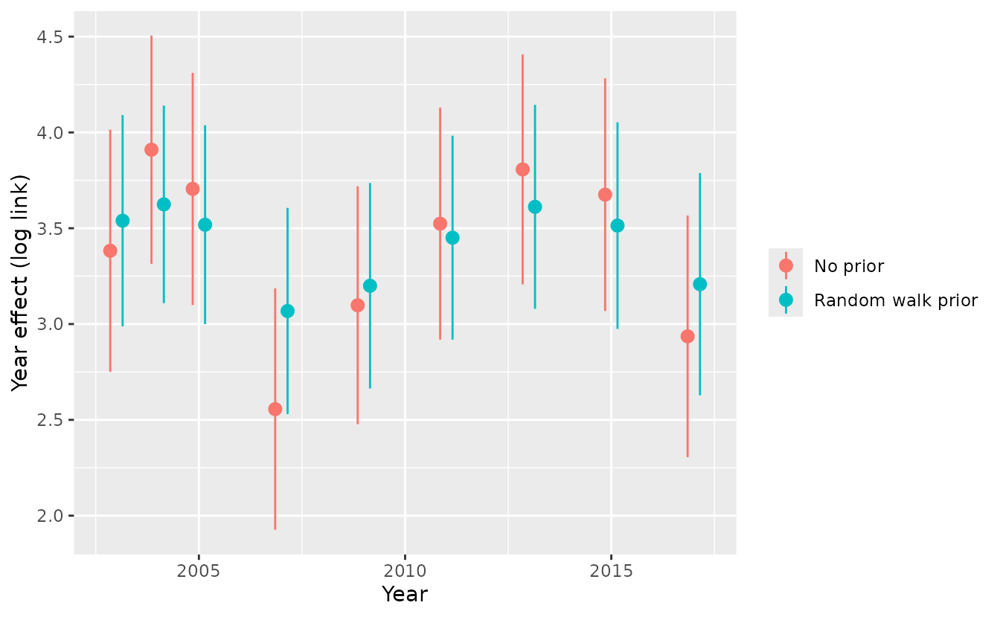

Custom priors and penalties
2026-10-03
Source:vignettes/articles/custom-priors.Rmd
custom-priors.RmdIf the code in this vignette has not been evaluated, a rendered version is available on the documentation site under ‘Articles’.
sdmTMBpriors() has built-in priors for common cases,
such as normal priors on the main effects or PC priors on Matérn random
fields. With the RTMB backend (the default), you can also write your own
prior or penalty as an R function. The function can refer to any
parameter, transformed parameters, or even combine several of them.
The function is passed to sdmTMBpriors(custom = ...).
It’s called as custom(par, theta), where:
-
paris the list of raw (internal) parameters, and -
thetais a list of natural-scale versions of some of them, such asphi = exp(ln_phi)or the Matérnrange.
It returns one or more log densities, which are added to the log likelihood. Because the function is evaluated inside the model’s objective, the priors are included in the gradients, the Laplace approximation, and the standard errors.
A few rules apply because the function is automatically differentiated:
- Use densities from RTMB, such as
RTMB::dnorm(x, mean, sd, log = TRUE).stats::dnorm()won’t work. - Return log densities. Remember
log = TRUE; sdmTMB can’t check this for you. - Don’t use
ifstatements on parameter values.
You can find common density functions available in RTMB at https://kaskr.r-universe.dev/articles/RTMB/RTMB-tips.html,
and the full list in the RTMB help page for dnorm:
help("dnorm,ad,ad.,ad.,logical.-method", package = "RTMB")A first example: a prior on a coefficient
We’ll fit a model to the Pacific cod survey data with a quadratic effect of depth and spatial and spatiotemporal random fields.
mesh <- make_mesh(pcod, c("X", "Y"), cutoff = 15)
fit <- sdmTMB(
density ~ depth_scaled + depth_scaled2,
data = pcod,
mesh = mesh,
family = tweedie(),
time = "year",
spatiotemporal = "iid"
)We can find what parameters and derived parameters are available for us to place penalties/priors on them:
get_prior_parameters(fit) |> head()
#> expression list name label value status
#> 1 par$b_j[1] par b_j (Intercept) 3.4182067 estimated
#> 2 par$b_j[2] par b_j depth_scaled -2.0263036 estimated
#> 3 par$b_j[3] par b_j depth_scaled2 -1.4782852 estimated
#> 4 par$ln_tau_O[1] par ln_tau_O <NA> 0.4253207 estimated
#> 5 par$ln_tau_E[1] par ln_tau_E <NA> 0.3908992 estimated
#> 6 par$ln_kappa[1, 1] par ln_kappa <NA> -2.1034363 sharedTo save time, that first model could have used
do_fit = FALSE.
The main-effect coefficients are in par$b_j, in the same
order as in the model output: the intercept, then
depth_scaled, then depth_scaled2. Here’s a
normal prior with mean 0 and standard deviation 0.5 on the
depth_scaled coefficient, the second element:
fit_b <- update(fit, priors = sdmTMBpriors(
custom = function(par, theta) {
RTMB::dnorm(par$b_j[2], 0, 0.5, log = TRUE)
}
))
tidy(fit)
#> # A tibble: 3 × 5
#> term estimate std.error conf.low conf.high
#> <chr> <dbl> <dbl> <dbl> <dbl>
#> 1 (Intercept) 3.42 0.244 2.94 3.90
#> 2 depth_scaled -2.03 0.150 -2.32 -1.73
#> 3 depth_scaled2 -1.48 0.0867 -1.65 -1.31
tidy(fit_b)
#> # A tibble: 3 × 5
#> term estimate std.error conf.low conf.high
#> <chr> <dbl> <dbl> <dbl> <dbl>
#> 1 (Intercept) 3.42 0.233 2.96 3.87
#> 2 depth_scaled -1.87 0.138 -2.14 -1.59
#> 3 depth_scaled2 -1.43 0.0843 -1.59 -1.26The prior shrinks the depth coefficient towards zero.
This particular prior is also available as a built-in prior, which gives the same answer:
fit_b2 <- update(fit, priors = sdmTMBpriors(
b = normal(c(NA, 0, NA), c(NA, 0.5, NA))
))
tidy(fit_b2)
#> # A tibble: 3 × 5
#> term estimate std.error conf.low conf.high
#> <chr> <dbl> <dbl> <dbl> <dbl>
#> 1 (Intercept) 3.42 0.233 2.96 3.87
#> 2 depth_scaled -1.87 0.138 -2.14 -1.59
#> 3 depth_scaled2 -1.43 0.0843 -1.59 -1.26Custom priors are especially useful for what the built-in priors can’t do — put any prior on any parameter or transformed parameter. The rest of this article shows some examples.
Finding the parameters
As shown above, get_prior_parameters() lists every
element of par and theta, how to refer to it,
any coefficient label, and its value. It leaves out raw parameters that
are fixed in this model, since a prior on a constant has no effect.
theta lists every transformation, including ones of
parameters this model doesn’t use (such as rho_sar in this
case), so check that the par elements behind a
theta element are listed before putting a prior on it. By
default, it also leaves out the random effects (here, the many random
field values); use random = TRUE to include them.
The expression column shows how to refer to each element
inside your prior function. For example, the depth_scaled
coefficient is par$b_j[2] and the Matérn range is
theta$range[1, 1]. Matrix columns are model components
(only one here; two for a delta model), and the rows of
ln_kappa and range are the spatial and
spatiotemporal fields. The "shared" status shows that the
two rows of ln_kappa are one estimated parameter here,
since share_range = TRUE by default.
You can also call get_prior_parameters() on a model
built with do_fit = FALSE, which is useful when writing
priors without having to wait for an initial model to fit.
Priors on transformed parameters
Priors can also go on natural-scale parameters in theta.
Suppose we think the spatial range is about 50 km and the spatiotemporal
standard deviation is probably less than 1. We’ll put a normal penalty
on the log of the range and a half-normal prior on sigma_E.
A normal density on log(range) isn’t quite a lognormal
prior on range, which would also include a
-log(range) term; the next section explains when that
difference matters. Several priors can go in one function. Just return
them together and optionally give each a name:
fit_range <- update(fit, priors = sdmTMBpriors(
custom = function(par, theta) {
c(
range = RTMB::dnorm(log(theta$range[1, 1]), log(50), 0.3, log = TRUE),
sigma_E = RTMB::dnorm(theta$sigma_E[1, 1], 0, 0.5, log = TRUE)
)
}
))
tidy(fit, "ran_pars")
#> # A tibble: 5 × 5
#> term estimate std.error conf.low conf.high
#> <chr> <dbl> <dbl> <dbl> <dbl>
#> 1 range 23.2 3.87 16.7 32.2
#> 2 phi 11.6 0.383 10.9 12.4
#> 3 sigma_O 1.51 0.206 1.16 1.97
#> 4 sigma_E 1.56 0.151 1.29 1.89
#> 5 tweedie_p 1.52 0.0111 1.50 1.54
tidy(fit_range, "ran_pars")
#> # A tibble: 5 × 5
#> term estimate std.error conf.low conf.high
#> <chr> <dbl> <dbl> <dbl> <dbl>
#> 1 range 28.4 3.48 22.3 36.1
#> 2 phi 11.6 0.384 10.9 12.4
#> 3 sigma_O 1.46 0.186 1.13 1.87
#> 4 sigma_E 1.40 0.107 1.20 1.63
#> 5 tweedie_p 1.53 0.0111 1.50 1.55The priors pull the estimates towards these values, but the data still have most of the influence.
get_prior_densities() shows the log density of each
named term at the estimates:
get_prior_densities(fit_range)
#> type term log_density
#> 1 density range -1.494569
#> 2 density sigma_E -4.141610This function only shows the custom priors.
Custom priors are added to any built-in priors also passed to
sdmTMBpriors(). I.e., they can and will be stacked on each
other, so you probably don’t want to specify the same parameter in
both.
A more advanced example: smoothing year effects
Built-in priors treat each coefficient on its own. A custom prior can even penalize differences between coefficients. Here we fit a separate mean for each year and shrink each year’s mean towards the previous survey’s, like a random walk. Since the surveys aren’t evenly spaced, the standard deviation grows with the square root of the gap between surveys.
years <- sort(unique(pcod$year))
n_yr <- length(years)
rw_sd <- 0.2 * sqrt(diff(years))
fit_yr <- update(fit, formula. = density ~ 0 + as.factor(year) + depth_scaled + depth_scaled2)
fit_rw <- update(fit_yr, priors = sdmTMBpriors(
custom = function(par, theta) {
yr <- par$b_j[seq_len(n_yr)] # the year effects are the first coefficients
sum(RTMB::dnorm(diff(yr), 0, rw_sd, log = TRUE))
}
))The function uses n_yr and rw_sd from the
environment where it was defined. That’s the way to pass fixed values
(hyperparameters) to a prior.
Comparing the year effects shows that the penalty pulls them together:
yr_est <- function(x, label) {
out <- tidy(x, conf.int = TRUE)[seq_len(n_yr), ]
out$year <- years
out$model <- label
out
}
d <- rbind(yr_est(fit_yr, "No prior"), yr_est(fit_rw, "Random walk prior"))
ggplot(d, aes(year, estimate, ymin = conf.low, ymax = conf.high, colour = model)) +
geom_pointrange(position = position_dodge(width = 0.6)) +
labs(x = "Year", y = "Year effect (log link)", colour = NULL)
This example shows how far custom priors can go; most uses will be simpler.
A gamma prior on a time-varying SD
Instead of fixed year effects, we can let the intercept follow a
random walk with time_varying = ~ 1. The SD of the random
walk steps is theta$sigma_V (its raw parameter is
par$ln_tau_V = log(sigma_V)). The rows are the time-varying
coefficients (only the intercept here) and the columns are model
components.
fit_tv <- sdmTMB(
density ~ 0 + depth_scaled + depth_scaled2,
data = pcod,
mesh = mesh,
family = tweedie(),
time = "year",
time_varying = ~ 1,
time_varying_type = "rw0",
spatiotemporal = "off",
extra_time = min(pcod$year):max(pcod$year)
)
get_prior_parameters(fit_tv) |> subset(name %in% c("ln_tau_V", "sigma_V"))
#> expression list name label value status
#> 8 par$ln_tau_V[1, 1] par ln_tau_V <NA> 0.2091255 estimated
#> 18 theta$sigma_V[1, 1] theta sigma_V <NA> 1.2325996 derivedA gamma prior is often easier to specify through its mean and
coefficient of variation (CV) than its shape and scale. A gamma with
mean mu and CV cv has
shape = 1 / cv^2 and scale = cv^2 * mu. Here’s
a prior with a mean of 0.2 and a CV of 0.3 on the SD of the year-to-year
changes in the intercept:
mu <- 0.2
cv <- 0.3
fit_tv_gamma <- update(fit_tv, priors = sdmTMBpriors(
custom = function(par, theta) {
c(sigma_V = RTMB::dgamma(theta$sigma_V[1, 1],
shape = 1 / cv^2, scale = cv^2 * mu, log = TRUE))
}
))
get_prior_parameters(fit_tv) |> subset(name == "sigma_V")
#> expression list name label value status
#> 18 theta$sigma_V[1, 1] theta sigma_V <NA> 1.2326 derived
get_prior_parameters(fit_tv_gamma) |> subset(name == "sigma_V")
#> expression list name label value status
#> 18 theta$sigma_V[1, 1] theta sigma_V <NA> 0.3138175 derivedThis prior is also available built in as
sdmTMBpriors(sigma_V = gamma_cv(mu, cv)), which gives the
same fit. The custom version is a starting point for other distributions
or for linking priors across coefficients. For a Bayesian fit, the log
Jacobian from ln_tau_V to sigma_V is
par$ln_tau_V[1, 1]. We’ll talk more about that next.
Penalties versus Bayesian priors and Jacobians
When fitting by maximum likelihood (the default), a custom prior is a penalty on the likelihood, and the optimum is the posterior mode on the scale the prior is written on. No Jacobian is needed. For a Bayesian fit (see the Bayesian vignette), a prior on a transformed parameter needs a Jacobian adjustment, because the sampler works with the raw parameters.
sdmTMB doesn’t automatically work out the Jacobian for a custom prior
for you. Instead, supply its log in custom_log_jacobian,
which is only used with bayesian = TRUE. For the normal
prior on the log range, the raw parameter is ln_kappa and
log(range) = log(sqrt(8)) - ln_kappa. The absolute
derivative of log(range) with respect to
ln_kappa is 1, so the log Jacobian is 0 and no adjustment
is needed. For the half-normal prior on phi = exp(ln_phi),
the log Jacobian is ln_phi:
fit_bayes <- update(fit,
bayesian = TRUE,
priors = sdmTMBpriors(
custom = function(par, theta) {
RTMB::dnorm(theta$phi[1], 0, 20, log = TRUE)
},
custom_log_jacobian = function(par, theta) {
par$ln_phi[1]
}
)
)A prior directly on a raw parameter as it enters the model, such as
par$ln_phi, never needs a Jacobian.
The Matérn range and field standard deviations
The Matérn range and the field standard deviations
(sigma_O, sigma_E) are more complex than most
parameters because they depend on each other. The range depends only on
ln_kappa, but each standard deviation depends on both
ln_kappa and its ln_tau_*. So the Jacobian for
a prior on sigma_E alone isn’t well defined: it has to come
from the joint transformation from (ln_kappa,
ln_tau_E) to (range, sigma_E).
The log Jacobian of that transformation is
log(range) + log(sigma_E). With a shared range (the
default, share_range = TRUE), one ln_kappa
maps to the range for both fields, so add log(range) once
plus log(sigma) for each field.
For example, for a Bayesian fit with the range and
sigma_E priors from earlier, the prior on
log(range) and sigma_E together needs a log
Jacobian of log(sigma_E). The log(range) term
from the joint transformation cancels with the -log(range)
from putting the prior on log(range) rather than
range:
fit_bayes_range <- update(fit,
bayesian = TRUE,
priors = sdmTMBpriors(
custom = function(par, theta) {
c(
range = RTMB::dnorm(log(theta$range[1, 1]), log(50), 0.3, log = TRUE),
sigma_E = RTMB::dnorm(theta$sigma_E[1, 1], 0, 0.5, log = TRUE)
)
},
custom_log_jacobian = function(par, theta) {
theta$log_sigma_E[1, 1]
}
)
)This model also has a spatial field, which shares the range. Without
a custom prior on sigma_O, its ln_tau_O keeps
a flat prior on its raw scale.
For priors on these parameters, we suggest the built-in penalized
complexity (PC) priors instead: pc_matern() through the
matern_s and matern_st arguments to
sdmTMBpriors(). They put a joint prior on the range and
standard deviation of each field and take care of the Jacobian for you
when bayesian = TRUE.
Limitations
- Custom priors need the RTMB backend.
- Like the built-in priors, custom priors are part of the model’s
objective, so they’re included in
logLik()andAIC(). - The names and shapes of
parandthetaare internal and could change in future versions. Check them withget_prior_parameters().